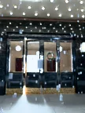
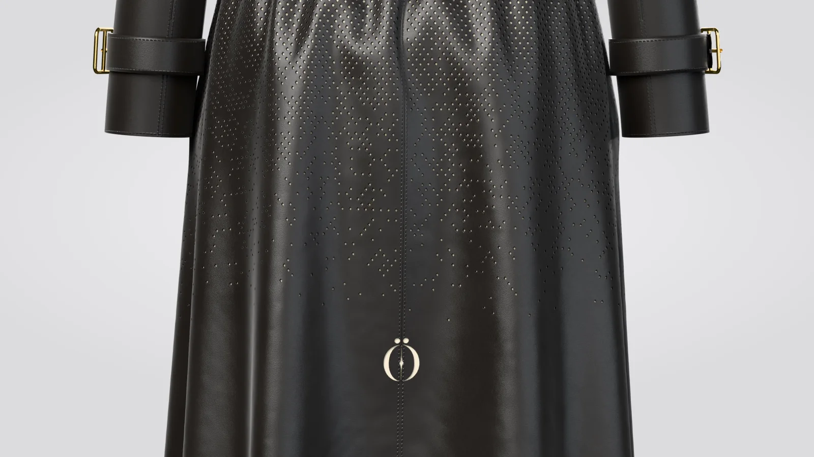

STAND-IN · img/gelosia/front/master.* (departments/apparel/new-pieces-2026-11/build/veil-coat/site/veil_coat_front_16k.png; 16K, 8640 × 15360)
STAND-IN · img/gelosia/front/master.* (departments/apparel/new-pieces-2026-11/build/veil-coat/site/veil_coat_front_16k.png; 16K, 8640 × 15360) STAND-IN · img/gelosia/three-quarter/master.* (three-quarter view, 8K; 8K, 4320 × 7680)
STAND-IN · img/gelosia/three-quarter/master.* (three-quarter view, 8K; 8K, 4320 × 7680) STAND-IN · img/gelosia/back/master.* (back view, 8K; 8K, 4320 × 7680)
STAND-IN · img/gelosia/back/master.* (back view, 8K; 8K, 4320 × 7680)Where it is going
The doors, in the snow
One door standing open, untouched.
Chapter I · Outerwear
Gelosia
Black leather coat
Scroll to walk around it
Chapter I
Gelosia
Black leather coat
The Siren's veil, let down into a coat. The net open at the collar and shoulders, closing to solid black leather by the hem, cream silk behind it the way light waits behind a curtain.
- LEATHER
- BLACK
- LINING
- CREAM SILK, OPAQUE
- LENGTH
- MID-CALF
- SIZE
- XS · S · M · L · XL
PRICE ON REQUEST
Keep a seatThe register sees the pre-sale first.
Details
- Pre-sale
- Made to order. We email your delivery date once production is confirmed. Cancel for a full refund any time before production starts.
- Returns
- Exchanges within 14 days of delivery, unused and with tags.
- Care
- Wipe with a soft dry cloth. Keep from rain and heat; if it gets wet, let it dry slowly away from a radiator. Store in its dust bag, stuffed with tissue, out of the light. Leather cleaning by a specialist only. Care
- Size
- The measurements

STAND-IN · img/gelosia/world/master.* (the film: the last frame, the world plate (the doors, in the snow); 8K, 5760 × 7680)Where it is going · the film
The doors, in the snow
One door standing open, untouched.
On the screen in the film, the picture is tomorrow: each piece in the place it is going, with one place kept for someone.
The filmClose

STAND-IN · img/gelosia/detail-net/master.* (the net closing to solid leather, 8K close-up; 8K, 7680 × 4320)The net closing to solid leather
A button and the belt
The cuff strap
The maker’s notes
Gelosia, the Veil Coat
- It begins as black lambskin, 1.0 to 1.2 mm, cut as panels on a flat bed.
- A net of diamonds is cut through each panel: 7.0 by 9.0 mm apart, the narrowest strand 2.7 mm.
- The net is open at the collar and shoulders and closes to solid leather above the knee.
- Every seam and edge keeps 4.5 mm of solid leather, and the two backs mirror each other at the centre seam.
- It closes with eight buttons, a belt and a strap at each cuff, and ends at mid-calf.
- One mark is cut at the centre back, 40.0 mm tall, 29 cm above the hem.
Behind it: opaque cream silk, bonded to the leather, 1.6 mm back from the face. Only cream shows through.
Read the bookThe packaging
The house lights go down. Black board, cream tissue the colour of the screen, and one gold disc between you and the first scene.
 STAND-IN · img/shared/pack-closed/master.* (packaging/chapter1/renders: closed (the approved final, 3840 px); 8K, 7680 × 4320)
STAND-IN · img/shared/pack-closed/master.* (packaging/chapter1/renders: closed (the approved final, 3840 px); 8K, 7680 × 4320)The closed box, its band and the gold disc
 STAND-IN · img/shared/pack-open/master.* (packaging/chapter1/renders: open (the approved final, 3840 px); 8K, 7680 × 4320)
STAND-IN · img/shared/pack-open/master.* (packaging/chapter1/renders: open (the approved final, 3840 px); 8K, 7680 × 4320)The open box, the piece folded in cream tissue
 STAND-IN · img/shared/pack-disc/master.* (packaging/chapter1/renders: disc (the approved final, 3840 px); 8K, 7680 × 4320)
STAND-IN · img/shared/pack-disc/master.* (packaging/chapter1/renders: disc (the approved final, 3840 px); 8K, 7680 × 4320)The gold disc on the band
 STAND-IN · img/shared/pack-shopping/master.* (packaging/chapter1/renders: shopping (the approved final, 3840 px); 8K, 7680 × 4320)
STAND-IN · img/shared/pack-shopping/master.* (packaging/chapter1/renders: shopping (the approved final, 3840 px); 8K, 7680 × 4320)The shopping bag with cream tissue
 STAND-IN · img/shared/pack-trims/master.* (packaging/chapter1/renders: trims (the approved final, 3840 px); 8K, 7680 × 4320)
STAND-IN · img/shared/pack-trims/master.* (packaging/chapter1/renders: trims (the approved final, 3840 px); 8K, 7680 × 4320)The hang tag, the card and the sealed envelope